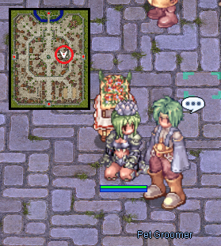
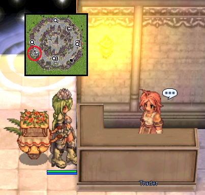
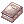
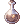
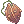
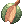
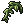

File list
This special page shows all uploaded files.
{kind=link}
{kind=link}
| Date | Name | Thumbnail | Size | User | Description | Versions |
|---|---|---|---|---|---|---|
| 01:47, 17 September 2015 | Angmod.png (file) | 3 KB | AloeLeaflet | 1 | ||
| 01:47, 17 September 2015 | Heista.png (file) | 3 KB | AloeLeaflet | 1 | ||
| 02:55, 17 September 2015 | Homsfood.png (file) |  | 216 KB | AloeLeaflet | 1 | |
| 02:55, 17 September 2015 | Basehomunfood.png (file) |  | 240 KB | AloeLeaflet | 1 | |
| 00:39, 18 September 2015 | Azzyai1.png (file) | 43 KB | AloeLeaflet | 1 | ||
| 00:39, 18 September 2015 | Azzyai2.png (file) | 51 KB | AloeLeaflet | 1 | ||
| 00:39, 18 September 2015 | Azzyai4.png (file) | 39 KB | AloeLeaflet | 1 | ||
| 00:39, 18 September 2015 | Ai5.png (file) | 73 KB | AloeLeaflet | 1 | ||
| 00:50, 18 September 2015 | Medicinebowl.png (file) | 438 bytes | AloeLeaflet | 1 | ||
| 00:51, 18 September 2015 | Melangepot.png (file) |  |
457 bytes | AloeLeaflet | 1 | |
| 00:55, 18 September 2015 | Potioncreationguide.png (file) | 542 bytes | AloeLeaflet | 1 | ||
| 00:55, 18 September 2015 | Alcoholguide.png (file) |  | 532 bytes | AloeLeaflet | 1 | |
| 00:55, 18 September 2015 | Acidbottleguide.png (file) | 517 bytes | AloeLeaflet | 1 | ||
| 00:55, 18 September 2015 | Bottlegrenadeguide.png (file) | 521 bytes | AloeLeaflet | 1 | ||
| 00:56, 18 September 2015 | Plantbottleguide.png (file) | 530 bytes | AloeLeaflet | 1 | ||
| 00:56, 18 September 2015 | Glisteningcoatguide.png (file) | 521 bytes | AloeLeaflet | 1 | ||
| 00:58, 18 September 2015 | Whiteherb.png (file) |  |
411 bytes | AloeLeaflet | 1 | |
| 00:58, 18 September 2015 | Blueherb.png (file) | 380 bytes | AloeLeaflet | 1 | ||
| 00:59, 18 September 2015 | Emptybottle.png (file) | 398 bytes | AloeLeaflet | 1 | ||
| 00:59, 18 September 2015 | Emptypotionbottle.png (file) | 498 bytes | AloeLeaflet | 1 | ||
| 00:59, 18 September 2015 | Emptytesttube.png (file) | 327 bytes | AloeLeaflet | 1 | ||
| 00:59, 18 September 2015 | Fabric.png (file) | 359 bytes | AloeLeaflet | 1 | ||
| 01:00, 18 September 2015 | Glasstube.png (file) | 383 bytes | AloeLeaflet | 1 | ||
| 01:00, 18 September 2015 | Heartofmermaid.png (file) | 359 bytes | AloeLeaflet | 1 | ||
| 01:00, 18 September 2015 | Immortalheart.png (file) |  |
412 bytes | AloeLeaflet | 1 | |
| 01:00, 18 September 2015 | Maneaterblossom.png (file) | 562 bytes | AloeLeaflet | 1 | ||
| 01:01, 18 September 2015 | Morningdewofygg.png (file) | 272 bytes | AloeLeaflet | 1 | ||
| 01:01, 18 September 2015 | Plantbottle.png (file) |  | 518 bytes | AloeLeaflet | 1 | |
| 01:01, 18 September 2015 | Poisonspore.png (file) | 327 bytes | AloeLeaflet | 1 | ||
| 01:02, 18 September 2015 | Seedoflife.png (file) |  |
469 bytes | AloeLeaflet | 1 | |
| 01:02, 18 September 2015 | Stem.png (file) | 327 bytes | AloeLeaflet | 1 | ||
| 01:02, 18 September 2015 | Witchstarsand.png (file) | 456 bytes | AloeLeaflet | 1 | ||
| 01:02, 18 September 2015 | Zenorcfang.png (file) | 419 bytes | AloeLeaflet | 1 | ||
| 01:30, 18 September 2015 | Howtogrowplantguide.png (file) |  |
472 bytes | AloeLeaflet | 1 | |
| 01:30, 18 September 2015 | Highqualitypotionguide.png (file) |  |
479 bytes | AloeLeaflet | 1 | |
| 01:31, 18 September 2015 | Hppotionguide.png (file) | 529 bytes | AloeLeaflet | 1 | ||
| 01:31, 18 September 2015 | Sppotionguide.png (file) | 495 bytes | AloeLeaflet | 1 | ||
| 01:31, 18 September 2015 | Thornseed.png (file) |  | 635 bytes | AloeLeaflet | 1 | |
| 01:31, 18 September 2015 | Pricklyfruit.png (file) |  | 563 bytes | AloeLeaflet | 1 | |
| 01:31, 18 September 2015 | Bloodsuckerseed.png (file) | 618 bytes | AloeLeaflet | 1 | ||
| 01:31, 18 September 2015 | Maneaterroot.png (file) |  |
482 bytes | AloeLeaflet | 1 | |
| 01:32, 18 September 2015 | Celermine.png (file) | 619 bytes | AloeLeaflet | 1 | ||
| 01:32, 18 September 2015 | Awakeningpotion.png (file) |  |
464 bytes | AloeLeaflet | 1 | |
| 01:32, 18 September 2015 | Spicysauce.png (file) |  |
424 bytes | AloeLeaflet | 1 | |
| 01:32, 18 September 2015 | Curefree.png (file) | 660 bytes | AloeLeaflet | 1 | ||
| 01:32, 18 September 2015 | Panacea.png (file) | 506 bytes | AloeLeaflet | 1 | ||
| 01:32, 18 September 2015 | Greenherb.png (file) |  | 446 bytes | AloeLeaflet | 1 | |
| 01:33, 18 September 2015 | Yggleaf.png (file) | 379 bytes | AloeLeaflet | 1 | ||
| 01:33, 18 September 2015 | Hppotion.png (file) | 510 bytes | AloeLeaflet | 1 | ||
| 01:33, 18 September 2015 | Holywater.png (file) |  |
414 bytes | AloeLeaflet | 1 |
{kind=link}
{kind=link}
{kind=link}
{kind=link}
{kind=link}
{kind=link}
{kind=link}
{kind=link}
{kind=link}
{kind=link}
{kind=link}
{kind=link}
{kind=link}
{kind=link}
{kind=link}
{kind=link}
{kind=link}
{kind=link}
{kind=link}
{kind=link}
{kind=link}
{kind=link}
{kind=link}
{kind=link}
{kind=link}
{kind=link}